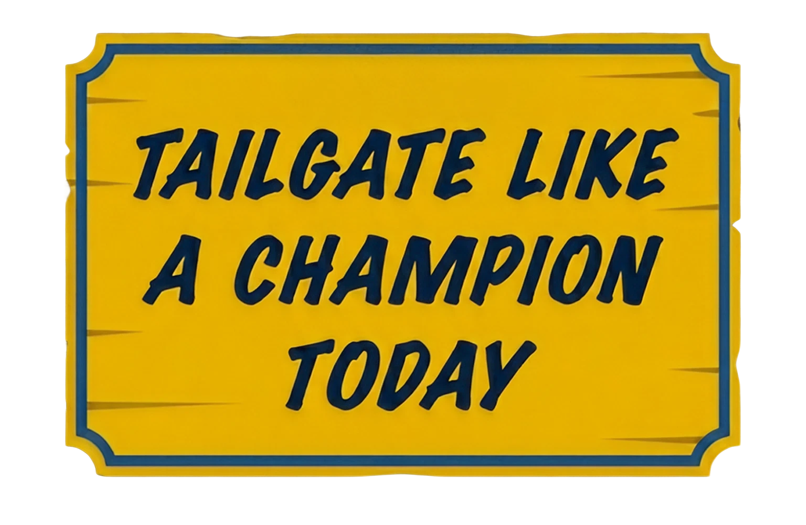

Discover tailgates
Browse active tailgates, menus, locations, and gameday details seamlessly.

Discover Notre Dame tailgates, claim surplus food, and help the gameday community redirect good food before it goes to waste.
MOBILE-FIRST EXPERIENCE • BUILT FOR GAMEDAY
A comprehensive suite of tools designed to elevate the tailgate experience while making a positive impact.
Browse active tailgates, menus, locations, and gameday details seamlessly.
Reserve available servings with a short pickup window, ensuring fresh food.
Help redirect good food to students, fans, and donation partners efficiently.
Publish menus, manage surplus inventory, and coordinate donations effortlessly.